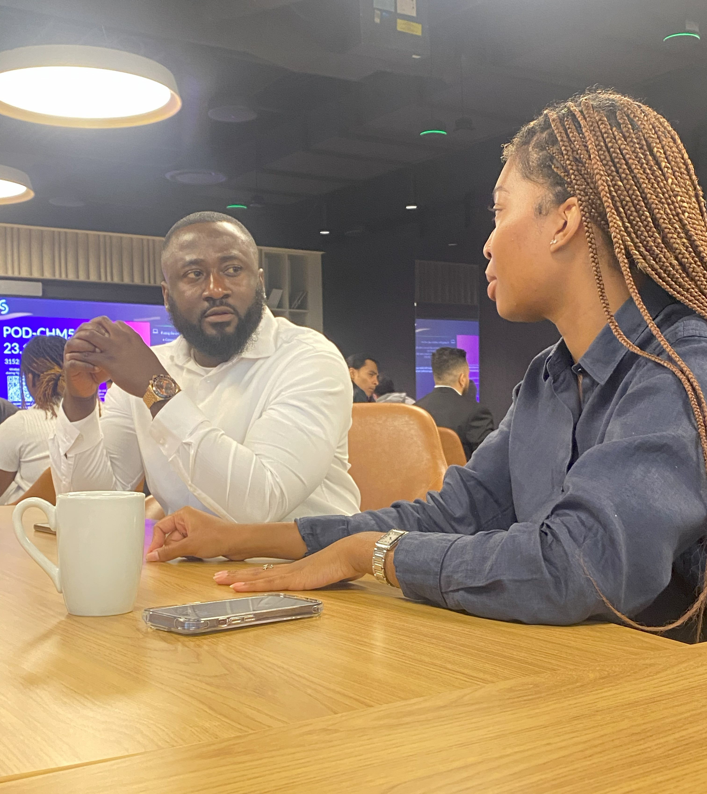
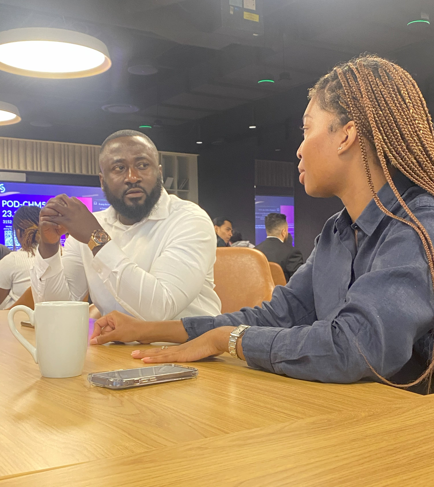

Business
Our client project (RFP) focused on solving the ease of pre and post surgical care. My role involved designing and building ERD diagrams, creating wireframes and User stories to coding out the entire application frontend and backend integrations. I contributed by ensuring our solution was user-friendly and met client requirements. As a member of KomPass Edge, I learned how to work in a consulting environment, adapt to client feedback, and deliver proposals that inspire confidence.
The Aquisition
Four weeks to final project presentation KomPass Edge was aquired by another team. This was sequal to almost three quarters of the team dropping out of the cycle in general. Executive decisions were made to integrate the remaining team members into the new structure, which provided a unique opportunity to showcase our work and adapt to new leadership. These were my take aways during that period:
- Adaptability: The ability to quickly adjust to new roles and expectations was crucial.
- Collaboration: Working closely with new team members fostered a sense of unity and shared purpose.
- Resilience: Overcoming challenges and setbacks strengthened our resolve and commitment to the project.
- Communication: Clear and open dialogue with all stakeholders was essential for success.
- Proactivity: Taking initiative and anticipating challenges helped us stay ahead of potential issues.
- Leadership: Embracing leadership roles, even in a new team structure, allowed us to guide the project effectively.
Picture Gallery
.jpg) 
